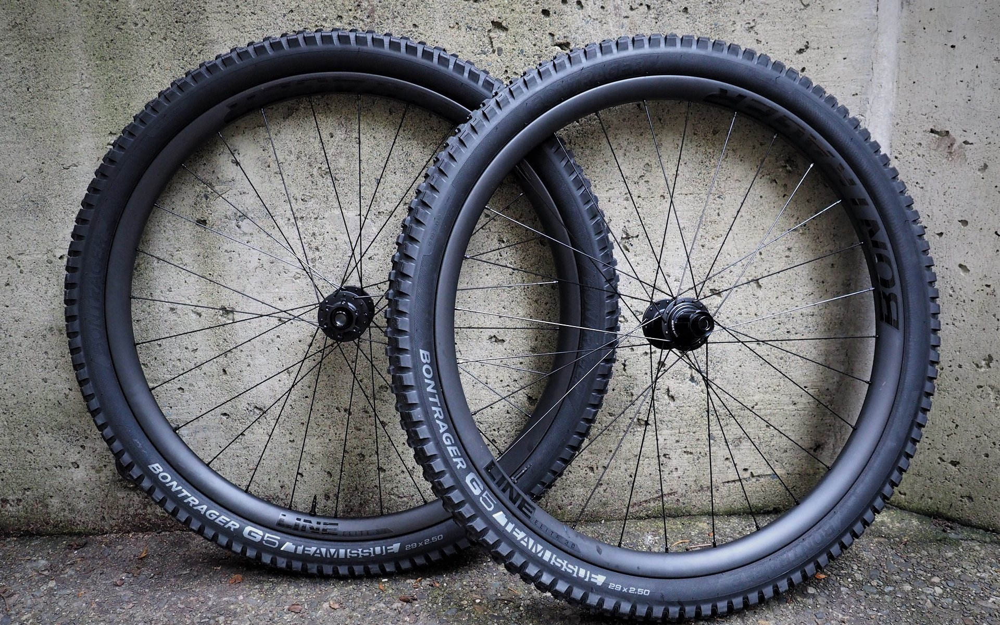

A bicycle wheel is a wheel, most commonly a wire wheel, designed for a bicycle. A pair is often called a wheelset, especially in the context of ready built "off the shelf" performance-oriented wheels. Bicycle wheels are typically designed to fit into the frame and fork via dropouts, and hold bicycle tires.